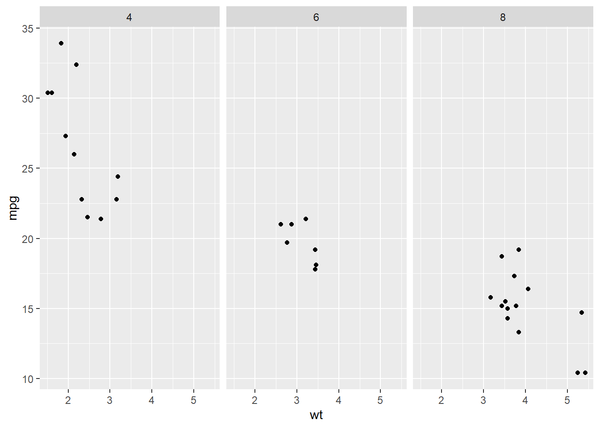
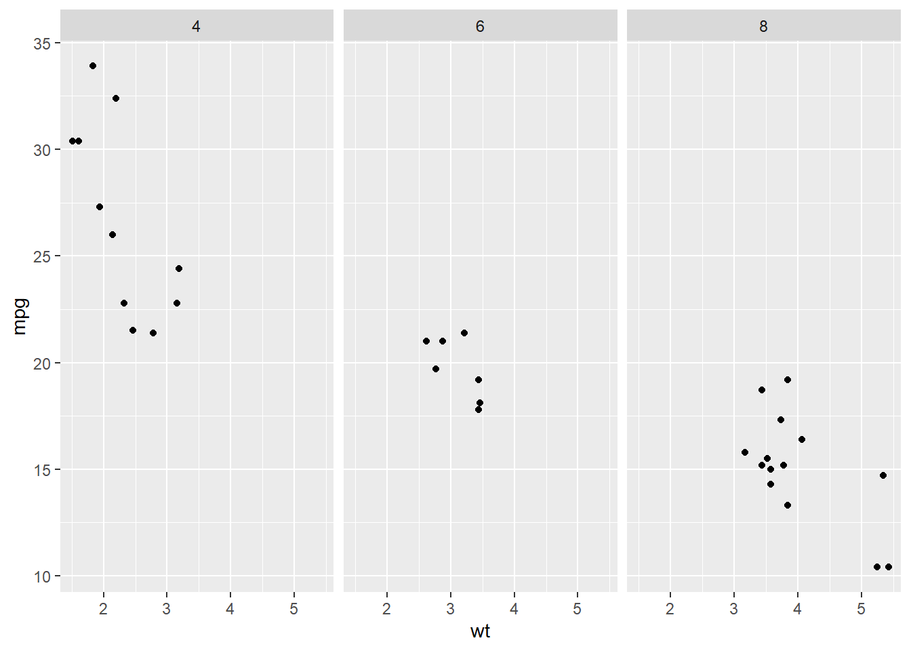
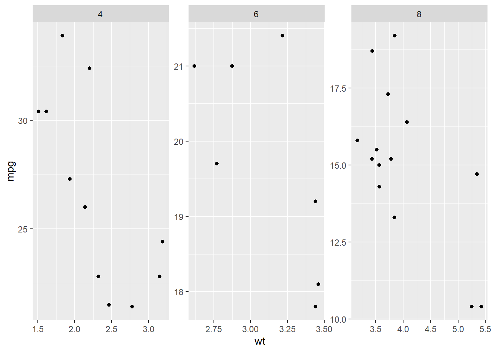
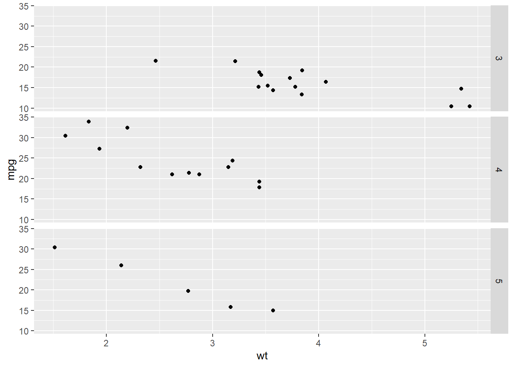
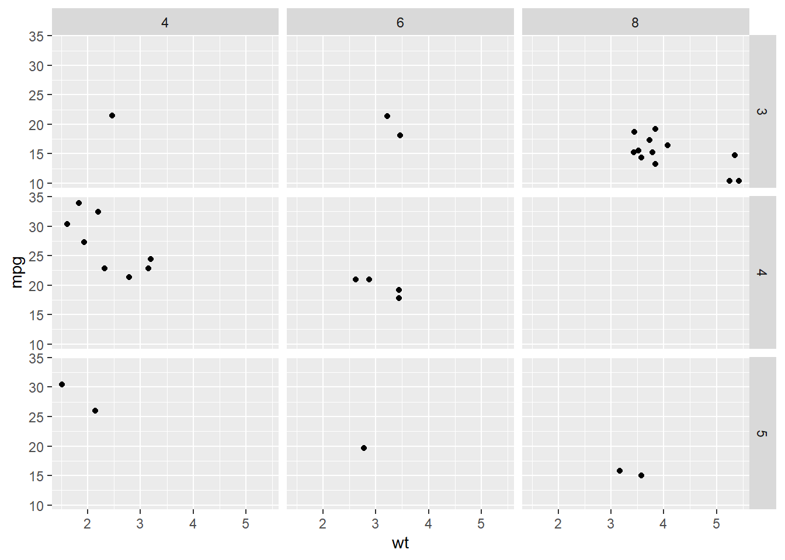
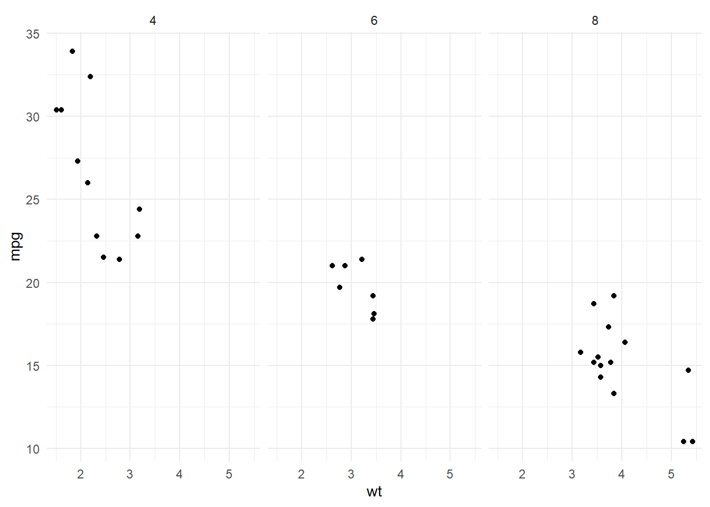

# import ggplot2 library
library(ggplot2)
# create a scatter plot with facets
ggplot(data = mtcars) +
geom_point(mapping = aes(x = wt, y = mpg)) +
facet_wrap(~cyl)
Facets: Explain what facets are and how they are used to divide a plot into subplots based on one or more variables.
# import ggplot2 library
library(ggplot2)
# create a scatter plot with facets
ggplot(data = mtcars) +
geom_point(mapping = aes(x = wt, y = mpg)) +
facet_wrap(~cyl)
Facet Scales: Explain how to use facet scales to customize the appearance of facets.
# create a scatter plot with customized facet scales
ggplot(data = mtcars) +
geom_point(mapping = aes(x = wt, y = mpg)) +
facet_wrap(~cyl, scales = "free")
Facet Grid: Explain how to use facet_grid() to create a grid of facets with specified rows and columns.
library(ggplot2)
ggplot(data = mtcars) +
geom_point(mapping = aes(x = wt, y = mpg)) +
facet_grid(rows = vars(gear))
The facet_grid() function in ggplot2 allows you to create a grid of facets, where each facet is a separate plot that shows a subset of the data. This is useful when you want to show the same type of plot for multiple groups of data, or when you want to compare multiple variables side-by-side.
The facet_grid() function takes two arguments: rows and cols, which specify the rows and columns of the grid of facets. The rows argument specifies the variable to use for the rows of the grid, and the cols argument specifies the variable to use for the columns of the grid.
For example, the following code creates a scatter plot of the wt and mpg variables from the mtcars dataset, and uses the gear variable to create a grid of facets with 3 rows and 1 column:
ggplot(data = mtcars) +
geom_point(mapping = aes(x = wt, y = mpg)) +
facet_grid(rows = vars(gear), cols = vars(cyl))
This code creates a scatter plot of the wt and mpg variables from the mtcars dataset, and uses the gear variable for the rows of the grid, and the cyl variable for the columns of the grid. This creates a grid of facets with 3 rows and 3 columns.
You can also use facet_wrap() function instead of facet_grid() to create a wrapped layout of facets that allows you to specify the number of columns and the function will automatically adjust the number of rows.
You can customize each facet individually by adding different geoms, scales, and aesthetics to each facet. This allows you to create more complex and informative plots, by providing more insights about the data in a compact way.
ggplot(data = mtcars) +
geom_point(mapping = aes(x = wt, y = mpg)) +
facet_wrap(~cyl) +
theme_minimal()
Exercise:
- Use any dataset of your choice and create a scatter plot with at least one facet.
- Customize the appearance of the facets using scales.
- Create a grid of facets with specified rows and columns.
- Add a theme to improve the appearance of the facets.
This exercise will give participants hands-on experience with creating facets in ggplot2 and customizing the appearance of those facets. It will also help them to understand how to use facets to create more informative plots, how to use facet scales to customize the appearance of facets, how to use facet_grid() to create a grid of facets with specified rows and columns, and how to use themes to improve the overall appearance of the facets.